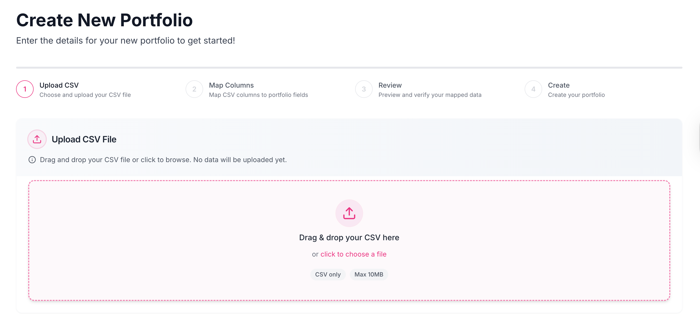
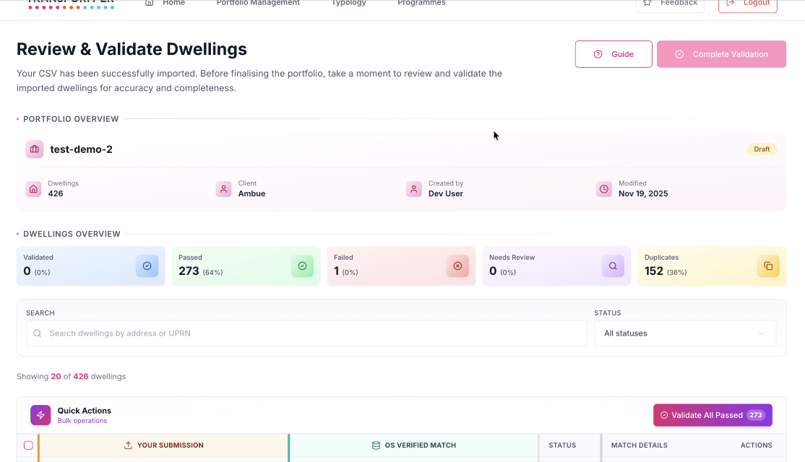
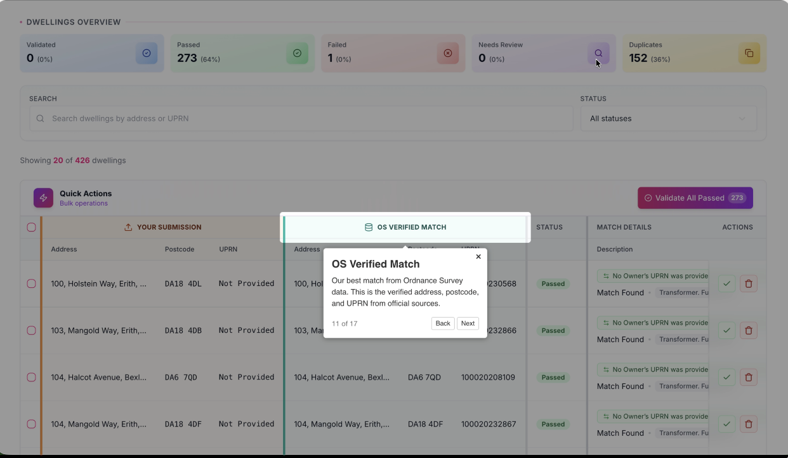
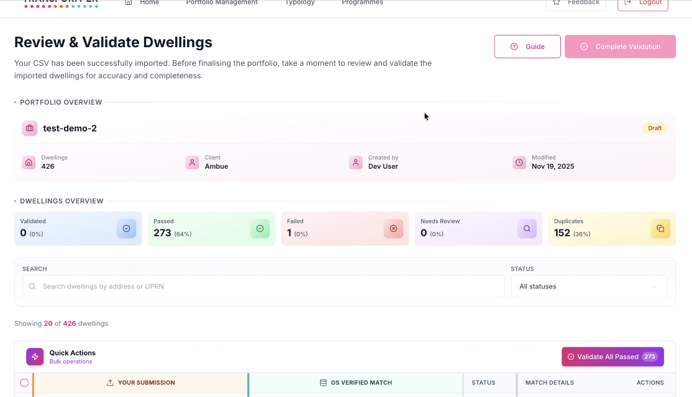
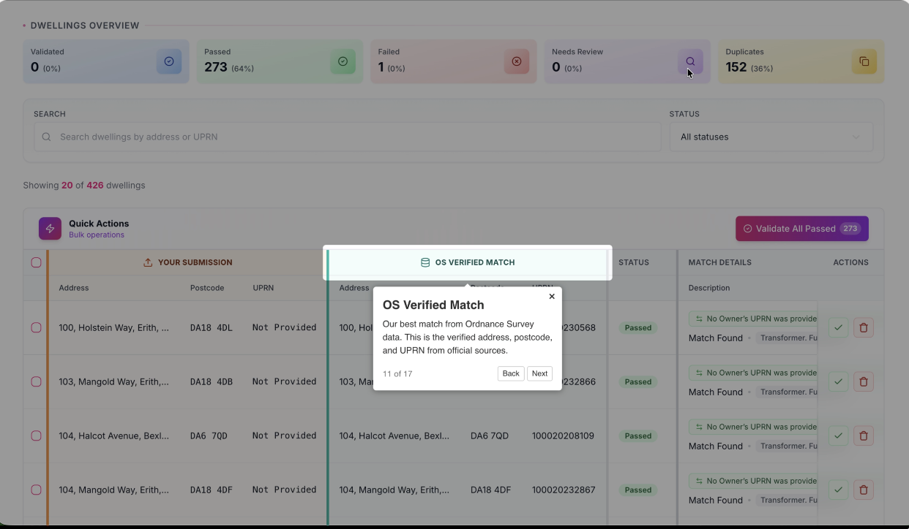
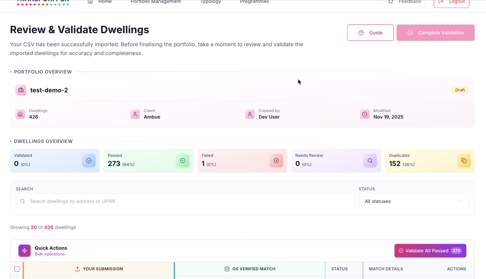
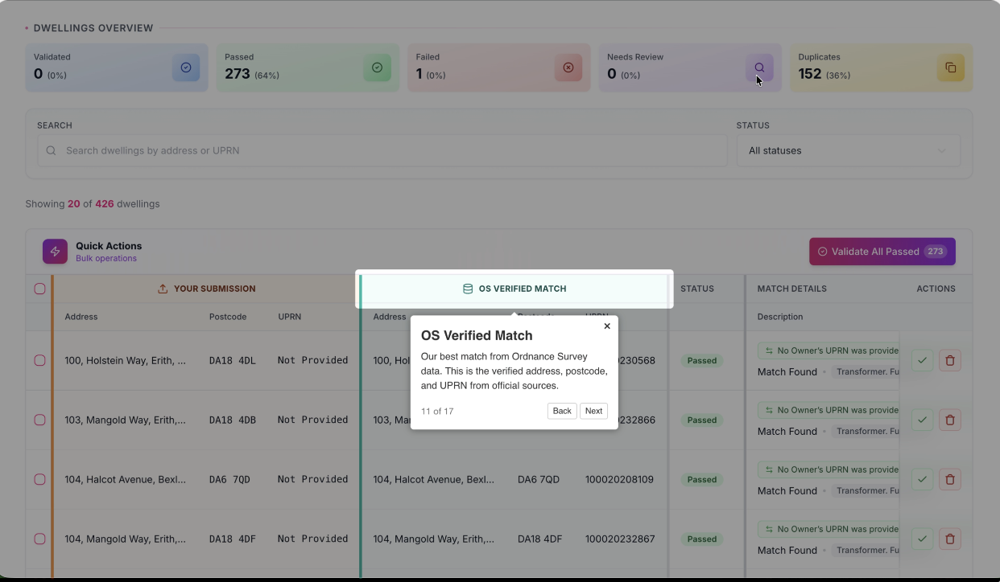

Case study
CSV Import & Validation Workflow
The UI walks users through four visual steps: CSV1 shows the drag/drop upload with size guardrails, CSV2 highlights mapping (template vs manual), CSV3 surfaces validation with duplicates flagged, and CSV4 reflects finalized portfolio dashboards. End to end it’s ~16k lines of React/TypeScript covering upload logic, mapping state machines, validation orchestration, WebSocket streams, accessibility work, and Storybook docs.

 





What I built
- Implemented the shell in React + TypeScript with SSR, keyboard navigation, “no data uploaded yet” states, and an interactive tour guide so new users understand each step without support.
- Step 1 (CSV1) handles drag/drop or browse uploads up to 10MB, streams progress, enforces retries, and blocks unsupported formats before ingestion.
- Step 2 (CSV2) runs the mapping engine with reusable templates, manual overrides, live match/completeness %, and warnings when required fields are unmapped or mismatched.
- Step 3 (CSV3) renders validation via WebSocket updates—duplicate detection, row-to-row comparison panes (submission vs verified), and per-record fix/ignore buttons that sync instantly.
- Step 4 (CSV4) finalizes the dataset into a portfolio with widgets for passed/failed/duplicate/needs-review counts, tagging, audit logs, and a built-in tour overlay highlighting each panel.
- Documented every endpoint, widget, and failure mode in Storybook and runbooks so other teams can run imports without engineering support.